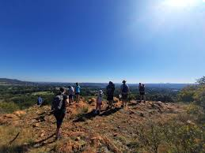

Ms Xinwelo Maphali


Paris, the capital of France, is a city that captivates visitors with its rich history, culture, and charm. Paris is often called the City of Love. Its charming streets, cozy cafes, and great sights make it an ideal destination for couples. Whether you’re strolling along the Seine River or enjoying a candlelit dinner, romance is in the air. I'd like to wander the medieval streets of the Marais, relax on a Paris “beach,” explore the famous Les Puces flea market, or enjoy a concert in a magnificent Paris church. Of course also take a cooking class, immerse myself in digital art shows at Atelier des Lumieres, and marvel at cherry trees in bloom during spring.
Oddly, I find spanish to be quiet an intriguing language. Being able to travel knowing that you can get yourself around and handle pretty much any scenario is one of the biggest reasons to learn Spanish. One interesting fact about Spanish is 7.9% of internet users communicate in Spanish, making it the second most commonly used language on digital platforms. Only one Spanish-speaking country—Mexico—is among the 10 countries with the greatest number of internet users. You can even travel alone, without having to rely on tour guides or other tourists. It takes away the stress and uncertainty that sometimes comes with travel. Spanish makes it feel like and everything is just so alright.
Spanish |
English |
|---|---|
| Buenos días, mi amor | Good Morning, my love |
| Me gusta viajar | I like to travel |
| Jesucristo va a volver | Jesus Christ is coming back (soon) |
| ¡Eh! Hace mucho que no nos vemos | Hey! Long time no see. |
The first subject I enjoyed taking in my undergrad was economics. I've always loved to analyse data and bring meaning to graphs, this made me see the world around me in a unique way. The graph below shows a bit of what Economics covers, we deal a lot with graphs, interpretation and predictions of the economy using various source data. Economics examines different types of market structures, such as perfect competition, monopoly, monopolistic competition, and oligopoly. Each structure has its own characteristics and implications for resource allocation and efficiency.
Secondly, I'd say Commercial law took most of my study breaks. It was just understandable, although i think the lecturer just made it so enjoyable, I really enjoyed learning the legal side of things- I never saw the need, but this subject made me thing of starting my own business with so much confidence. Besides the fact that my lecture just made the subject so understandable and easy to pass, like below, commercial law coverd a lot of real life legal matters in all aspects and i love justice, almost thought of changing my degree to Law for a sec.

Lastly, my favourite subject would have to be cost-benefit analysis, although i did this one later on, it brought back a lot of hope into data analytics when the dream seemed to become bluring because course wasn't getting easier. This one really was so eye opener, as an aspiring economists i know i will deal a lot with analysis, balancing budgets nad making crutial decisions that will benefit the economy with less costs or more effiecient spending, so like the graph below CBA was just taking me to that era.

Located in Johannesburg, the Apartheid Museum is a powerful institution that illustrates apartheid and the 20th-century history of South Africa. It’s part of the Gold Reef City complex and opened in November 2001.


The house is a single-story red-brick matchbox built in 1945. It has bullet holes in the walls and the facade has scorch marks from attacks with Molotov cocktails. The house was petrol bombed several times and often raided by members of the police force during the apartheid. Next to the house lies the Morris Isaacson High School where the June 1976 uprisings began. The house was commissioned as part of a Johannesburg City tender for new houses in Orlando.
Melville Koppies, located in Johannesburg, South Africa, is a compelling historical destination that offers a captivating glimpse into the region's past. Spanning over 150 hectares of pristine indigenous vegetation, this natural reserve holds archaeological significance, boasting evidence of human occupation dating back millions of years. Visitors to Melville Koppies have the opportunity to explore ancient stone tools, rock art, and remnants of Iron Age settlements, providing invaluable insights into the lives and cultures of early inhabitants.
